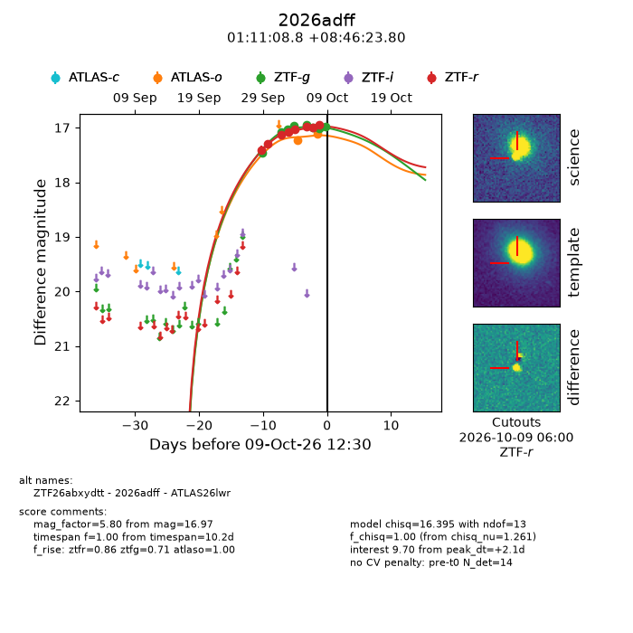
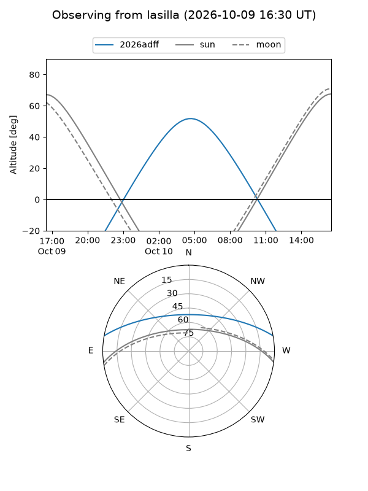
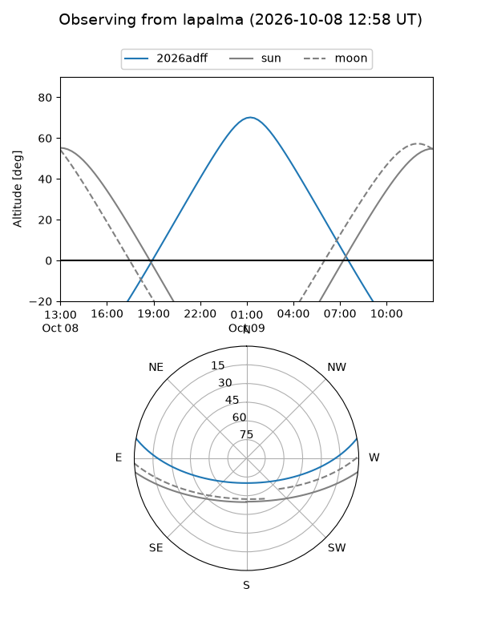
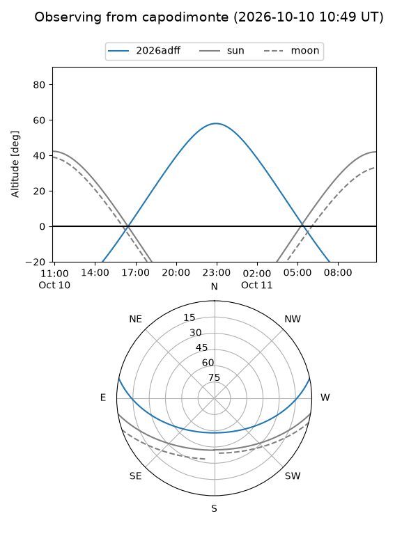
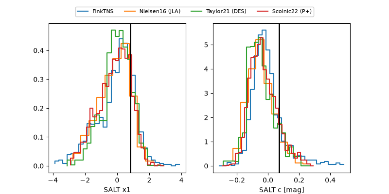

2026adff
Target 2026adff at 2026-10-09 12:32
Aliases and brokers:
FINK-ZTF: ztf.fink-portal.org/ZTF26abxydtt
Lasair-ZTF: lasair-ztf.lsst.ac.uk/objects/ZTF26abxydtt
ALeRCE-ZTF: alerce.online/object/ZTF26abxydtt
YSE-PZ: ziggy.ucolick.org/yse/transient_detail/2026adff
TNS name: wis-tns.org/object/2026adff
Direct TNS query: direct search
alt names
ZTF26abxydtt (ztf,fink_ztf)
2026adff (tns,yse)
ATLAS26lwr (atlas)
Coordinates:
equatorial (ra, dec) = 17.7867,+8.77328
equatorial (HMS+DMS) = 01:11:08.81,+08:46:23.80
galactic (l, b) = (131.1919,-53.78209)
Flags:
peak dt: +2.1
Photometry:
last atlaso=17.12, ztfg=16.97, ztfr=16.95
2 atlaso, 8 ztfg, 8 ztfr detections
Lightcurve

Visibility



Additional plots
